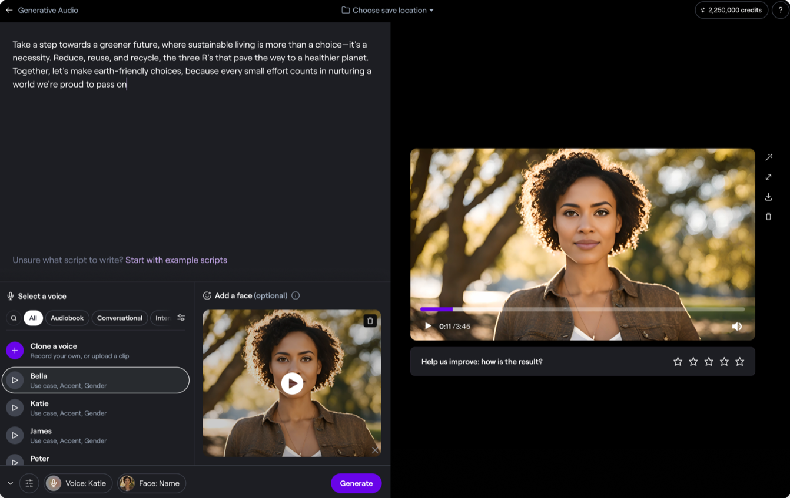
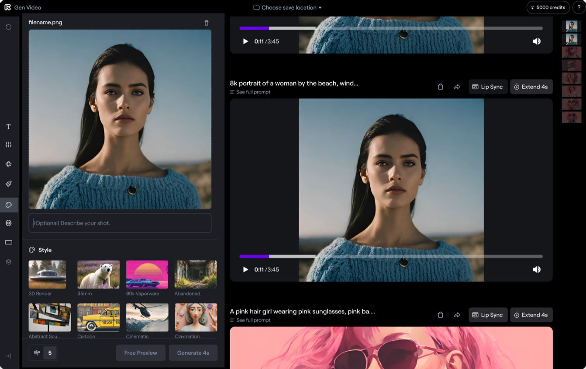
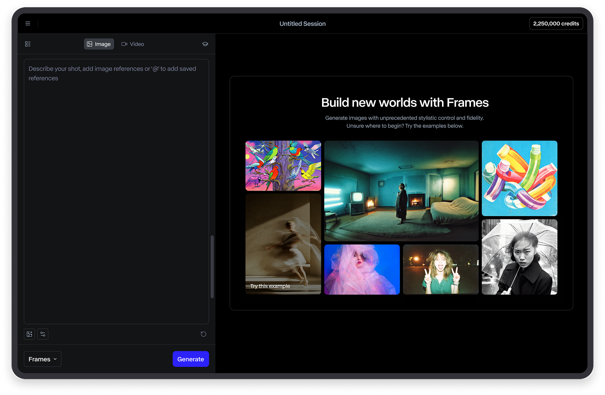
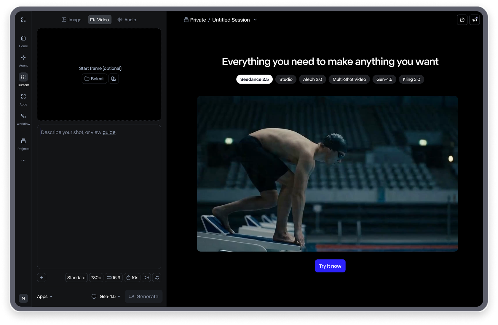
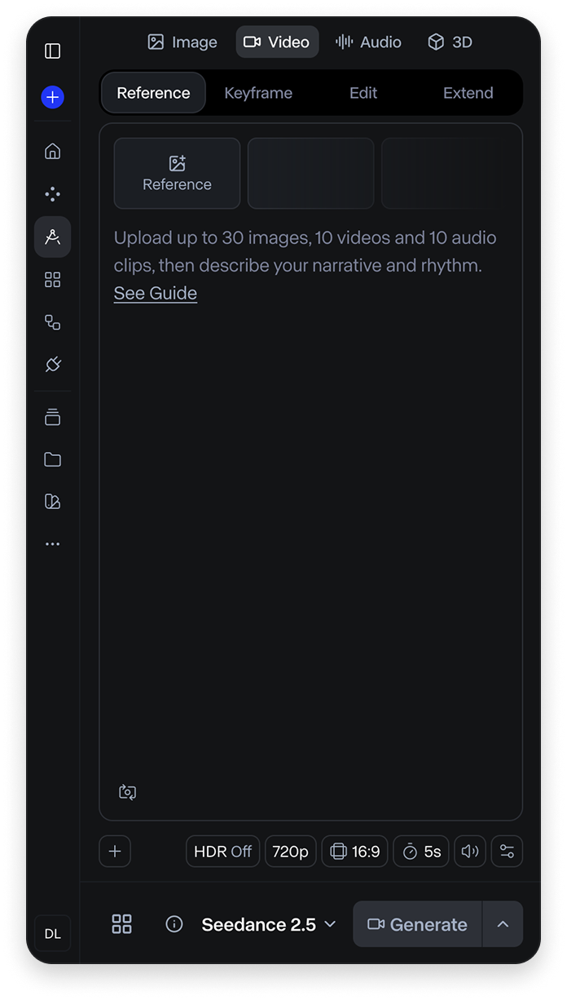
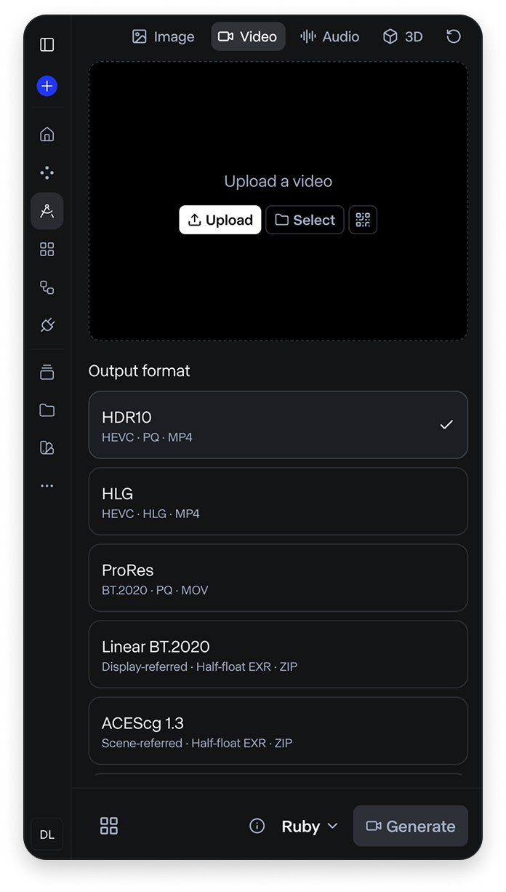
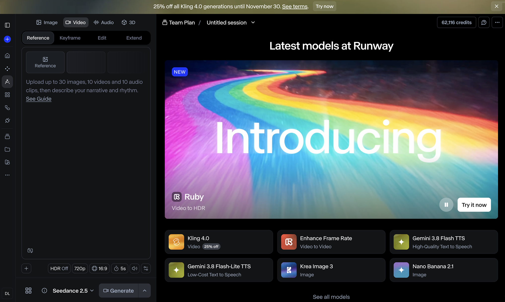

Model productization
Scaling how Runway ships models
Runway ships models fast, and integrates third-party models on day one thanks to a backend and API system refined by our third-party model team.
When there were fewer third-party models, each launch started from scratch, so empty states, layouts and error handling differed from tool to tool.
Alongside designing those launches, I helped build the system behind them. It includes a productization checklist that gives every model a repeatable path to launch, one modular layout shared across tools, clearer error states, and a model picker built for an ever-growing list of vendors.
Every next launch is now easier and faster.
Launch highlights
First-of-their-kind launches
Aleph 2.0
Upgraded video editing model, launched with Edit Studio.
Act-Two & One
Drive motion of the head, face, body and hands from one driving video.
Gen-4 Turbo
Video model built for consistent characters, objects and locations.
Gen-2 & 1
Runway’s first text-to-video and text-to-image models.
And more
Third-party models such as Seedance 2.5 and Kling 3.0 Omni, integrated on day one.
Before
Each launch started from scratch
Every tool had its own layout and empty state, with examples and upsells competing for the same space.




What I contributed
A system that makes every next launch easier and faster
01
Productization checklist
A repeatable path from model to launch across our web app.
02
Transparent error states
Clearer feedback when a generation fails, so users know what to try next.
03
Scalable model picker
Built for an ever-growing suite of third-party models.
Modular layout
One layout, every model



Model picker
Browse every model by vendor and modality

Unified feed
New features up top, popular models below

Links
- Aleph 2.0Runway
- Runway Gen-4: AI Video Generation with World ConsistencyRunway Research
- Introducing Act-OneRunway Research
- Runway Gen-3 Alpha: AI Video Generation with Temporal ControlRunway Research
- Gen-2: Generate novel videos with text, images or video clipsRunway Research
- Gen-1: The Next Step Forward for Generative AIRunway Research